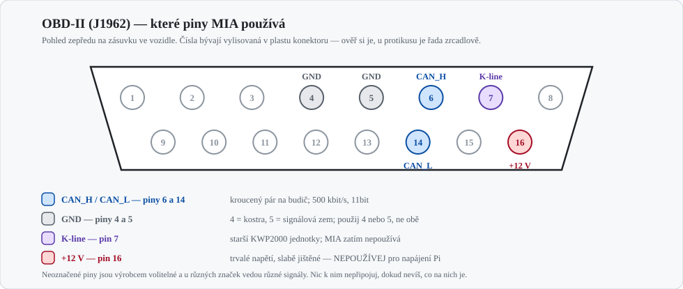

Wiring & Power (OBD‑II / CAN)
Rychlá referenční karta pro připojení ESP32 na OBD-II. Podrobnosti, napájení v autě, vstupy/výstupy a revize firmwaru: Zapojení ESP32 modulů do MIA.
1. Konektor OBD-II — které piny potřebuješ

| Pin | Signál | Pozn. |
|---|---|---|
| 6 | CAN_H | kroucený pár s pinem 14 |
| 14 | CAN_L | |
| 4 / 5 | Kostra / signálová zem | použij jednu, ne obě |
| 7 | K‑line | starší KWP2000 jednotky; MIA zatím nepoužívá |
| 16 | +12 V trvalých | nenapájet odsud Raspberry Pi — tenký, slabě jištěný vodič pro diagnostiku |
2. Volba budiče — SN65HVD230 ano, TJA1050 ne

Dřívější verze tohoto dokumentu uváděla „SN65HVD230/TJA1050" jako zaměnitelné. Nejsou:
TJA1050 je 5V budič a ESP32 není 5V tolerantní — jeho RXD by na 3,3V vstup pustil 5 V.
Použij 3,3V typ (SN65HVD230, TJA1051T/3 s pinem VIO), nebo dej na RXD převodník úrovní.
Zapojení SN65HVD230 → ESP32
| Budič | ESP32 | |
|---|---|---|
VCC |
3V3 |
ne 5 V |
GND |
GND |
společná zem |
RXD |
GPIO16 |
budič → ESP32 |
TXD |
GPIO17 |
ESP32 → budič; pro pasivní odposlech nezapojuj |
Rs |
10 kΩ na GND |
normální rychlost |
CANH / CANL |
OBD 6 / 14 | kroucený pár |
Piny odpovídají zdrojáku apps/esp32/firmware-obd/components/ai_servis_obd/ai_servis_obd.c.
3. Napájení
graph LR
OBD["Palubní síť 12 V<br/>KL.30 přes pojistku 1 A"]
BUCK["Měnič 12 V → 5 V<br/>vstup 6–36 V, ≥ 1 A"]
CAP["Bulk 220–470 µF<br/>u modulu"]
ESP["ESP32 DevKit<br/>pin 5V/VIN"]
TRX["SN65HVD230<br/>z 3V3 ESP32"]
OBD --> BUCK --> CAP --> ESP --> TRX
- Vstupní rozsah měniče 6–36 V: při startování motoru napětí padá hluboko pod 9 V.
- Bulk kondenzátor u modulu pokryje vysílací špičky WiFi (~500 mA), jinak
Brownout detector was triggered. - Společná zem: OBD GND → měnič → ESP32 → budič, všechno na jeden bod.
- Nikdy nenapájej desku z USB a z auta současně — při flashování odpoj auto.
4. Parametry sběrnice
- Bitrate 500 kbit/s, 11bitové identifikátory (EU vozy zhruba po r. 2008).
- Dotazy na
0x7DF, odpovědi z0x7E8.
Terminace: v autě ne, na stole ano
| Kde | 120 Ω | Proč |
|---|---|---|
| V autě na OBD | nepřidávej | sběrnice je zakončená z výroby na obou koncích |
| Na stole (ESP32 ↔ ESP32 / USB-CAN) | 2× 120 Ω | bez nich se nedomluví nic |
Moduly SN65HVD230 z tržiště mívají 120 Ω osazený napevno — před montáží do auta ho vypájej nebo přeřízni propojku.
5. Bezpečnost
- Pro odposlech používej listen-only:
TWAI_MODE_LISTEN_ONLYa zároveň fyzicky nezapojený vodičTXD. Softwarový přepínač je registr, který chyba v kódu přepíše; nezapojený drát ne. - Pojistka 0,5–1 A co nejblíž odbočce, kroucený pár pro CAN, jediný zemnící bod.
- Žluté konektory ve voze jsou airbagy — nesahat.
Odposlechová varianta firmwaru
ai_servis_obd.c se ve výchozím stavu instaluje v TWAI_MODE_NORMAL, protože posílá OBD dotazy.
Pasivní sestavení: idf.py build -DMIA_TWAI_LISTEN_ONLY=1 — ovladač pak jede v TWAI_MODE_LISTEN_ONLY a ai_servis_obd_read_pid() nevysílá.
Souvislosti a další opravy v téhle komponentě: nálezy proti firmwaru.
6. Kam dál
- Zapojení ESP32 modulů do MIA — napájení, GPIO, flashování, materiál, nálezy
- Zapojení MIA do Audi A4 Cabriolet 8H — strana vozu a Raspberry Pi
- ESP-IDF: TWAI driver · SN65HVD230 datasheet · SocketCAN